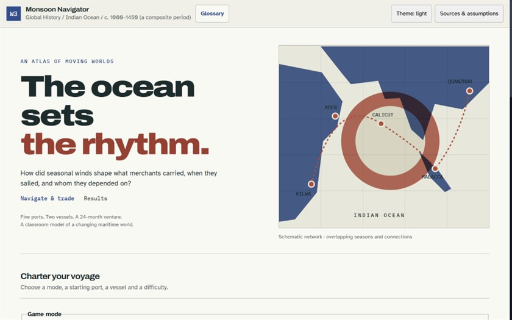
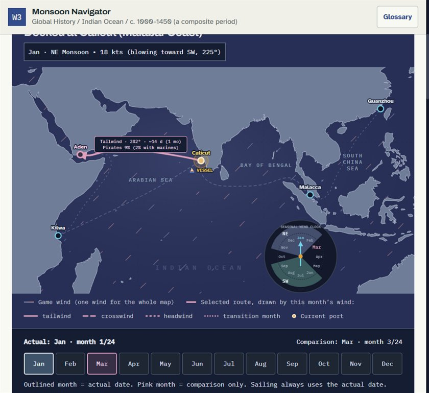
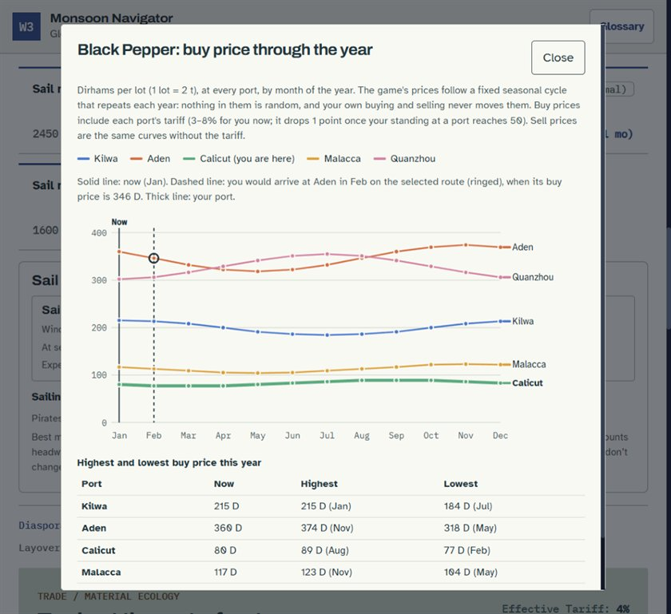
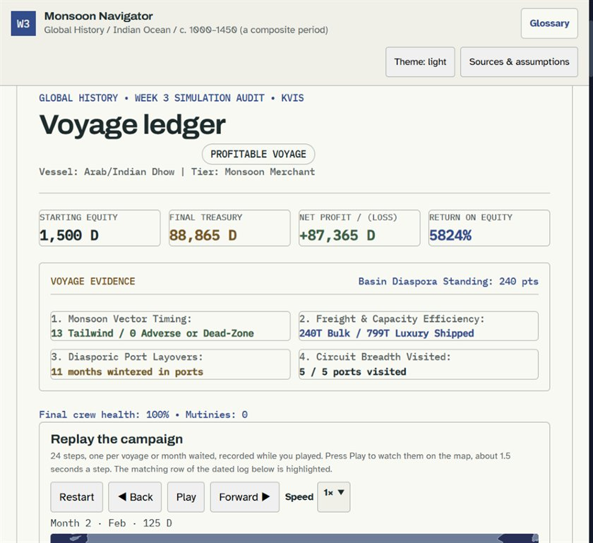

Your first voyage: an interactive walkthrough
Play this guide beside the game, step by step. Test the game’s own wind, price, and risk rules here before you commit a ship at sea. It shows you where to look and what to test — what to conclude in your audit is up to you.
Before you launch
- Open Monsoon Navigator in a second tab or window so you can switch between the tutorial and your live ship.
- Check which mode your class is using: Play Only launches without typing (no target verdict or PDF audit); Student Mode asks for your details, profit target, and prediction, and unlocks the reflection and printable PDF audit at the end.
- For a first practice run, start at Calicut in Play Only with the Arab / Indian Ocean Dhow and 2. Monsoon Merchant (1,500 D, 0 D debt). Every campaign starts in January (Month 1 of 24).
Charter your ship and starting capital

Every choice on the charter screen sets a real constraint on your 24-month venture. Notice that the Wind preview menu on the opening map is a preview only: whichever month you preview, your voyage always starts in January.
Interactive lab: Compare ships & starting tiers
Live game mathQuick check: On Month 1 at Calicut (Monsoon Merchant, 1,500 D), Black Pepper costs 80 D per 2-ton lot. What actually limits how much pepper you can load on day one?
The Junk holds 2.5× as much cargo as the Dhow, but its crew costs 35 D/month instead of 15 D/month model rule. When in a 24-month voyage does a bigger hold start to pay for its higher upkeep?
Read the Monsoon Clock before you sail

- NE Monsoon (Nov–Feb): blows southwest (225°, 18 kt). Fast westbound & southbound crossings (Quanzhou → Malacca → Calicut → Aden → Kilwa).
- SW Monsoon (Jun–Sep): blows northeast (045°, 20 kt). Fast eastbound & northbound crossings (Kilwa → Calicut → Malacca → Quanzhou).
- Inter-Monsoon Transition / Dead Zone (Mar–May and Oct): light 6 kt winds with a 35% cyclone chance (18% with a Celestial Navigator) and 25% doldrums chance (−20 D) model rule.
- Headwinds: sailing into an opposing monsoon damages your hull (20–34% × ship storm factor × difficulty storm multiplier), drains extra crew health (−12%), and carries a 35% turn-back chance that wastes the trip’s months and wages model rule.
Interactive lab: Monsoon Clock & Sail-now-or-wait
Test months & sea lanesQuick check (try it in the lab above): You are at Calicut in January (Month 1) in a Dhow and want to reach Malacca. Compare sailing now vs waiting for June's tailwind. Which arrives earlier?
In the game itself, pick a destination under Route to compare in the Wind comparison panel to get its Sail now or wait card, and read the Sailing calendar from your current port. Both use the engine’s own numbers for your actual ship.
When is a slower crosswind worth taking right away, and when is waiting in port for the monsoon reversal smarter than fighting a headwind or dead zone?
Arbitrage, seasonal curves, and bulk vs. luxury

- Fixed seasonal waves: Every commodity oscillates ±8% across the 12 months in a repeating cycle model rule. Nothing in prices is random, and your trades never move port prices.
- Tariffs apply on buying only: Your buy price includes the port’s tariff (3% at Malacca up to 8% at Aden). Selling carries no tariff.
- Two different constraints: Early in a voyage, cash is tight so return per Dirham matters most. Later, once you have tens of thousands of Dirhams, hold space is tight so profit per ton takes over.
Interactive lab: Cargo margin & hold-weight calculator
Exact game pricesQuick check (test Malacca → Aden in the lab): Suppose you already have 20,000 D and a 120 t Dhow at Malacca in December, heading west to Aden in February. Why does loading Moluccan Cloves (1 t/lot) earn far more than loading Teak Timber (10 t/lot)?
Bulk goods (Teak, Porcelain, Textiles) fill space fast and are cheaper per lot; luxury goods (Cloves, Ivory) require more capital and raise piracy risk. How does your cargo mix shift from Year 1 to Year 2?
Waiting in port, diaspora standing, and ship care
Waiting out an inter-monsoon dead zone is not wasted time. Every month you winter in port costs layover fee + crew wages, but it also:
- Restores crew health by +20% (capped at 100%). Below 50% crew health, every crossing carries a mutiny risk of
(50 − health)%costing2 × monthly wagesmodel rule. - Raises Diaspora Standing at that port by +15 (sailing in adds +5). At 20 standing, layover fees drop 25%; at 50 standing, layover fees drop 50%, buy tariffs drop 1 percentage point, and arrival piracy risk is cut in half.
- 75% chance of a Diaspora Quarter vignette giving a rebate (+15 to +25 D) or hull re-caulking (+8% hull at Calicut).
Interactive lab: Diaspora standing & piracy risk
Exact hazard formula| Care for ship & crew (one-time or per repair) | Cost | What it changes in the model |
|---|---|---|
| Celestial Navigator (Mu’allim) | 180 D | +15% effective speed; cuts Dead Zone storm chance from 35% to 18%. |
| Armed Marine Escort | 160 D | Cuts arrival piracy probability by 80% (×0.2). Does not stop headwind turn-backs. |
| Oiled-Canvas Tarpaulins | 90 D | Stops 35% moisture mildew on Cotton Textiles in Dead Zone months. |
| Careen Hull (repeatable) | 60 D | Restores +25% hull integrity (keep ≥ 70% if carrying Ming Porcelain in rough seas). |
| Commenda Loan (Hard tier) | 500 D | Accrues 5% interest every 6 months; repay in full once cash allows, or settled at Month 24. |
Quick check (try it above): Arriving at Malacca (base piracy 26%) with Cloves or Ivory aboard gives a 39% raid chance. What does hiring Armed Marines (160 D) drop that chance to?
Which costs in Monsoon Navigator are predictable up front (wages, tariffs, layover fees), and which are probabilistic (storms, turn-backs, pirates, diaspora rebates)?
Try a full 24-month rhythm
Before opening the reference run below, try playing your own 24-month voyage in the game tab. A useful mental rhythm for a first run is:
- Nov–Feb (NE Monsoon): Ride southwest and west — Quanzhou → Malacca → Calicut → Aden → Kilwa.
- Mar–May (Inter-Monsoon): Winter in port instead of risking 35% dead-zone cyclones; rebuild crew health and Diaspora Standing.
- Jun–Sep (SW Monsoon): Ride northeast and east — Kilwa → Calicut → Malacca → Quanzhou.
- Oct (Inter-Monsoon): Winter one month for the NE Monsoon reversal, then start Year 2’s westbound circuit with much more capital.
Open after your first attempt: reference 24-month run (1,500 D → 88,865 D)
Played live on 24 November 2026 in projects/03/index.html (commit f71aba2): Play Only, Arab / Indian Ocean Dhow, 2. Monsoon Merchant, starting at Calicut. Every sailing leg used a tailwind (13 tailwind, 0 headwind/dead-zone) and wintered through every inter-monsoon transition (11 layover months).
This is one played plan, not a typical or best result. The same rules allow much larger profits, and waiting out every transition has a cost as well as a benefit. With the game’s hazards on, an exploratory planner with perfect price knowledge that re-planned after each delivery or wait made these median net profits for this ship and tier (300 seeded runs each), against this run’s 87,365 D: about 269,000 D when it avoided headwinds only, 256,000 D when it also waited out every transition (about 13,000 D, or 5%, less), and 235,000 D when it sailed whatever the wind, with a wide spread (middle 80% of runs about 158,000–313,000 D) because turn-backs and storms are random (research/03/results/2026-11-23-adaptive-routes/).
| Months | Port & actions | Wind | Treasury after |
|---|---|---|---|
| M1–M2 (Jan–Feb) | Buy 17× Black Pepper at Calicut (1,360 D, 34 t) → sail to Aden, sell for 5,440 D (+4,080 D) → sail Aden → Kilwa. | NE tailwind | 5,550 D |
| M3–M5 (Mar–May) | At Kilwa: hire Armed Marines (160 D), buy 25× E. African Ivory (4,400 D, 75 t). Winter 3 months (standing reaches 50; +20 D rebate in M5). | Wait (dead zone) | 915 D |
| M6–M9 (Jun–Sep) | Sail Kilwa → Calicut → Malacca → Quanzhou. Sell 25× Ivory at Quanzhou for 19,075 D (+14,675 D). | SW tailwind | 19,945 D |
| M9–M10 (Sep–Oct) | Winter 2 months at Quanzhou (standing reaches 35; +15 D rebate in M9). | Wait (reversal) | 19,877 D |
| M11–M14 (Nov–Feb) | Buy 15× Ming Porcelain (915 D, 120 t) → sell at Malacca (1,770 D); buy 60× Cloves (10,020 D) → add 30× Pepper at Calicut (2,400 D, full 120 t) → sell both at Aden (56,400 D) → sail Aden → Kilwa. | NE tailwind | 64,652 D |
| M15–M17 (Mar–May) | At Kilwa (standing 55, 4% tariff): buy 40× Ivory (7,000 D, 120 t). Winter 3 months (standing reaches 100; three +20 D rebates). | Wait (dead zone) | 57,637 D |
| M18–M22 (Jun–Oct) | Sail Kilwa → Calicut → Malacca → Quanzhou; sell 40× Ivory (30,520 D). Winter 2 months (standing 70; +15 D rebate in M22). | SW tailwind + wait | 88,059 D |
| M23–M24 (Nov–Dec) | Buy 15× Porcelain (915 D) → sell at Malacca (1,770 D) → winter final month in Malacca (standing 35; crew health 100%). | NE tailwind + wait | 88,865 D |
Note on randomness: even if you follow the exact same sequence of trades and routes, Diaspora Quarter rebates (75% chance per wait) and piracy rolls are random, so your final cash and event log can differ slightly from 88,865 D.
Quick check: In the reference run above, why did the merchant wait 11 of the 24 months in port instead of sailing every single month?
What happens if you replay with the exact same monsoon rhythm, but switch from the Dhow (120 t) to the Chinese Ocean-Going Junk (300 t) — or switch to Hard mode with a 500 D Commenda loan?
Read your Voyage Ledger, Replay, and “Game or History?”

- Check the four Voyage Evidence boxes: Monsoon Vector Timing (tailwind vs adverse/dead-zone legs), Freight & Capacity Efficiency (bulk vs luxury tons shipped), Diasporic Port Layovers, and Circuit Breadth (ports visited).
- Use “Replay the campaign”: Step forward one move at a time (or press Play). Each step highlights its exact row in the Dated voyage evidence table below, helping you pick two dated ledger entries that explain why your venture gained or lost money.
- In Student Mode: Compare your final profit against your starting prediction, write your reflection grounded in specific dated entries, and check the printed/exported PDF before turning it in.
Interactive check: Model assumption, particular sources, or general record?
0 / 5 sortedSort each statement into one of three bins, based on the repository’s first-pass literature notes in research/03/literature/: a classroom model assumption (a rule chosen for the game), something documented in particular sources (for a named place and time, not everywhere), or the general historical record (broadly supported across the region).
1. Reversing seasonal monsoon winds structured when Indian Ocean ships could cross.
2. Port commodity prices follow a fixed ±8% annual curve that never changes no matter how many tons you buy or sell.
3. Port trade relied on warehousing and brokerage charges, port-officer lodging and storage services, and credit arrangements across long delays between outlay and return.
4. One uniform wind blows across the entire Indian Ocean each month, while Ming porcelain, Malacca’s 15th-century entrepôt and the charges in a 1130s Aden account operate side by side.
5. Hiring a Celestial Navigator costs 180 D, Armed Marines cost 160 D, and a Commenda loan accrues exactly 5% interest every 6 months.
Evidence summary: what the repo’s research notes support and what remains unresolved
| Topic in Monsoon Navigator | Status in research/03/ |
|---|---|
| Seasonal monsoon corridors | Supported conceptually in Indian Ocean historiography (Beaujard 2019 in the P01 review; Copeland 2025/2026 as an Iron Age modelling comparator). Beaujard describes several possible sailing windows and does not establish a universal closure of any port. The first pass established no completed, dated Aden–Calicut voyage at all, so crossing days are not calibrated from historical logs. |
| Storage charges, port-officer services, and credit partnerships | Documented qualitatively across separate sources: Cairo Geniza accounts itemise warehouse rent, care, and brokerage (PGP 9063, Aden c. 1134) and shipment charges/settlements (PGP 5457); Hall (2006, pp. 466–469) documents 15th-century Melaka shahbandar lodging/storage; Chaudhuri ch. 9–10 (bodies read 2026-11-24, endnotes unread, evidence largely 17th–18th c.) covers market gluts, outlay-to-return delays, and credit instruments. Scholars also dispute how far reputation mechanisms governed trade (Greif vs. Edwards & Ogilvie, Goldberg, Ackerman-Lieberman). |
| Pepper procurement at Calicut | Bounded qualitative chain (Prange 2011; Ma Huan/Mills): distinguishes collection, storage, and port sale (the Ma Huan/Mills p. 143 duty/permission details were author-read only, not independently checked); no numerical calibration into game prices. |
| Which ship earns more | Depends on route choice and on market depth, in exploratory simulations. In the base game, under perfect-knowledge route choice, the Junk earns about 2.1–2.4× the Dhow’s profit (research/03/results/2026-11-23-adaptive-routes/; 2.2–2.4× in the depth study’s cells). Exploratory simulations with hypothetical market depth found the Dhow ahead only in narrow settings: every port capped, with selling on arrival only, or per-good caps of 10–25 lots; one capped port leaves the Junk at least 1.82× ahead (research/03/results/2026-11-24-depth-liquidity/). Under the myopic one-voyage-look-ahead harness with avoid headwind, the Dhow wins (217,937 vs 176,848 D at normal, hazards off). |
| Commodity prices, tariffs, piracy %, specialist fees, 5% loan interest | Classroom model assumptions — not historical measurements. |
How the reference numbers and screenshots were made
The formulas in the interactive labs are adapted from projects/03/index.html at repository commit f71aba2 (page SHA-256 0b11ae287ab32e3ee6fe1ead1dec8b5d52b4b60f34076f854a39f54b7d8c74d7) and rewritten for this page: formulas adapted, behaviour identical to the engine’s in every case compared. The four screenshots and the 24-month reference run were captured on 24 November 2026 by serving the repository locally over HTTP and playing projects/03/index.html in a desktop browser (1280×800 viewport, light theme, Play Only mode, no student name entered, Arab / Indian Ocean Dhow, 2. Monsoon Merchant, starting at Calicut). Because layover rebates and piracy rolls use random draws, replaying the same decisions can produce slightly different final cash even with zero headwinds or dead-zone crossings.
The game has its own account of what is sourced and what is invented: open Sources & assumptions from the toolbar at the top of the game page.
If a classmate earned a huge profit in Monsoon Navigator by dumping 300 tons of cloves in Aden all at once, what real-world economic limit from Chaudhuri’s Indian Ocean ports is missing from the classroom model?